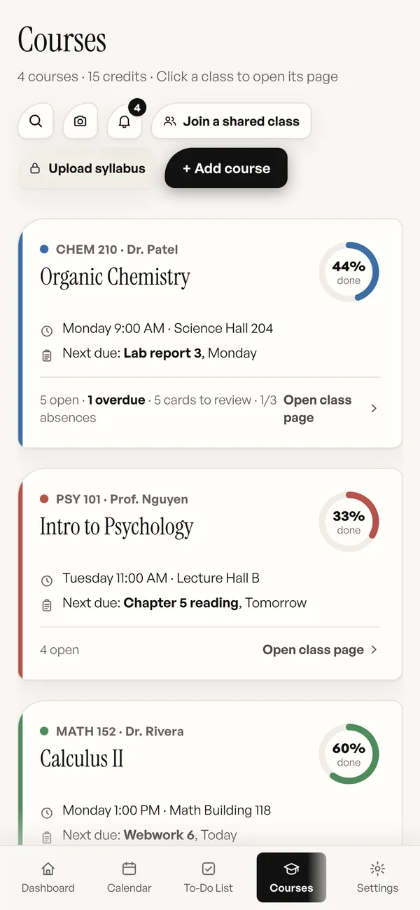

A student planner built around your semester, not a template.
Studio critiques, problem sets, lab reports, reading-heavy seminars, clinical hours. Every major runs differently, and a planner built for one shape of coursework fights you the moment your classes do not match it. Semester HQ is organized by class and by due date, and bends to the rest.
Built to bend to your major, not the other way around
A student planner app has one real job: make the next thing obvious. That gets harder the more your week refuses to look like a timetable. An engineering student has weekly problem sets and a lab every other Tuesday. A nursing student has lectures, clinicals, and a skills check-off. An art student has a critique and a studio that is open until midnight. The same app has to work for all three without asking any of them to fill in a field that makes no sense.
So Semester HQ keeps the fixed parts small and the flexible parts flexible. Every class gets a color that follows it through the calendar, the assignments list, and the notebook. Work carries a type (reading, lab, quiz, discussion, project, or plain assignment) so the list tells you what kind of hour you are in for. The dashboard shows the widgets you actually use. And nothing assumes a fixed structure to your term: add a class mid-semester, archive one you dropped, run a summer session, or plan a thesis that spans two terms.
How to set up a student planner in an afternoon
Seven steps, and the third one is the only one that involves taste.
-
Sign in and name the term
Any Google account or email works. Semester setup asks for the term’s start and end dates so the dashboard can tell you which week of the term you are in.
-
Add your classes with their real rhythm
Give each class its meeting days, times, and room. A lab that meets every other week, a seminar that meets once, a studio with open hours: enter what is true, not what a template expects. With Plus, upload the syllabus instead and the times, dates, and policies come from the document.
-
Pick a color and a name you will recognize
The color follows the class everywhere. The name is yours: “Orgo” works better than a course code you will never say out loud.
-
Put in the work, typed like a text
“lab report 3 monday 5pm” becomes a lab for the right class due Monday at 5:00 PM. Readings, problem sets, and discussion posts that repeat become a series. A capstone or portfolio becomes a project with milestones from a template.
-
Make the dashboard match your week
The dashboard shows what is up next, today’s schedule, what is due this week, the next exams, and a weekly focus goal you set. Turn off the parts you do not use. Open the Heads Up bell for everything that needs attention; nothing will interrupt you.
-
Keep notes and cards where the class is
The notebook files every note under its class automatically, with highlights, checklists, export to PDF, and search. Turn a note into flashcards, or import a Quizlet, Anki, or CSV deck, and spaced repetition brings each card back right before you would forget it.
-
Change it when your program changes
Switched majors, added a minor, took a lighter term, started grad school: add, edit, and archive classes and semesters at any point. The planner does not have an opinion about the shape of your degree.
What it looks like on a phone
Courses on a phone, from the sample semester. Each card is a door into the class page.

Paper planner, Google Calendar, Notion, or Semester HQ
The honest version: each of these works for a certain kind of student. This is where each one fits.
| What matters | Paper planner | Google Calendar | Notion | Semester HQ |
|---|---|---|---|---|
| Fits an unusual schedule | Yes, with a pen. | Yes; every event is manual. | Yes, if you build it. | Yes: enter what is true per class. |
| Setup time | An evening per semester. | An evening. | An evening, plus upkeep. | About a minute per syllabus with Plus. |
| Organized by class | If you keep it so. | One calendar per class. | A property or a page per class. | Built in. |
| Notes and flashcards | Notes yes; cards separate. | No. | Notes yes; cards need a workaround. | Both, filed by class. |
| On your phone | In your bag. | Yes. | Yes. | Yes, installed to the home screen, works offline. |
| Reminders | None. | Push. | Reminders. | None by design; a Heads Up bell. |
| Cost | The notebook. | Free. | Free plan, with paid tiers. | $7.99 a month for Plus. |
If you love paper, keep the paper. Semester HQ is for the student who has tried four apps and is still checking the syllabus PDF.
Questions about the student planner
Is this only for four-year college students?
No. Anyone taking classes with due dates and a schedule can use it: four-year college, community college, grad school, nursing or trade programs. No university affiliation is required.
Does it work for grad school?
Yes. Classes, seminars, lab hours, and a thesis with milestones all fit, and nothing assumes an undergraduate timetable. A project that spans two terms works too.
What if I switch majors or add a minor?
Nothing in the planner assumes a fixed major. Add, edit, or archive classes and semesters at any point as your program changes.
Does it grade my work or calculate a GPA?
No. Semester HQ deliberately leaves grades out. It tracks what is due, when classes meet, exams, and how prepared you feel.
What does it cost?
Semester HQ Plus is $7.99 a month, cancel anytime, with a 14-day refund on the first charge. There is no free plan; the live demo lets you try the whole interface without an account, but it saves nothing.
Build a planner around your actual semester.
Try the live demo in your browser, no account needed. Semester HQ Plus is $7.99 a month when you want to keep it.